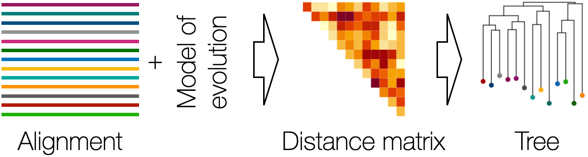
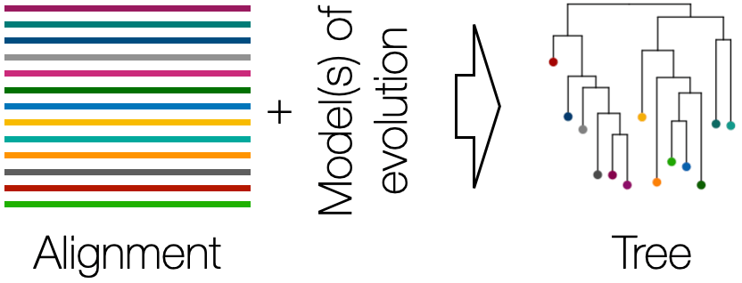
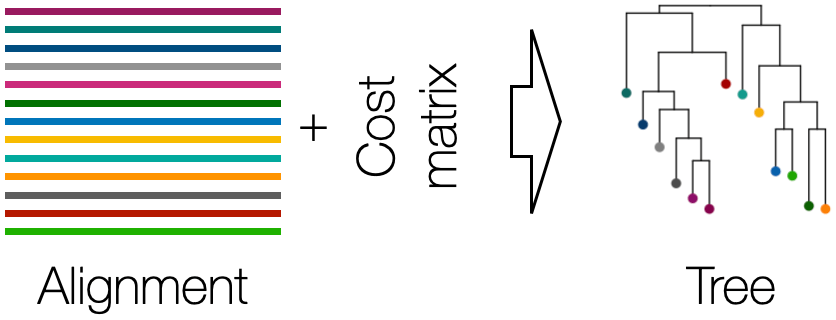
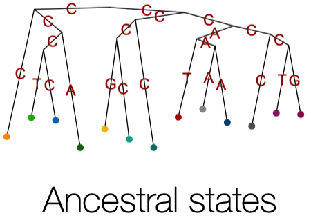

Phylogenetics Overview
DECIPHER offers a rich feature set for performing phylogenetic analyses. The two workhorse functions for phylogenetics are DistanceMatrix and Treeline.Why use DECIPHER for phylogenetics?
- Treeline can optimize trees for multiple objectives within a single function, facillitating comparison across different criteria.
- Many different nucleotide and amino acid models of evolution are supported, including automatic model selection by likelihood.
- Treeline is accurate and fast, with excellent time and memory scalability.
- DECIPHER contains tools for other phylogenetic analyses, including ancestral state reconstruction and mapping character state changes.
Minimum Evolution (ME) Trees - Minimize (balanced) tree length given a distance matrix derived from a sequence alignment and a model of evolution.

Maximum Likelihood (ML) Trees - Maximize the likelihood of the tree given an alignment and a model of evolution.

Maximum Parsimony (MP) Trees - Maximize the parsimony score of a tree according to a cost matrix.

Ancestral State Reconstruction - Estimate the ancestral sequence states at each internal node on a phylogeny and map state changes along each branch.
